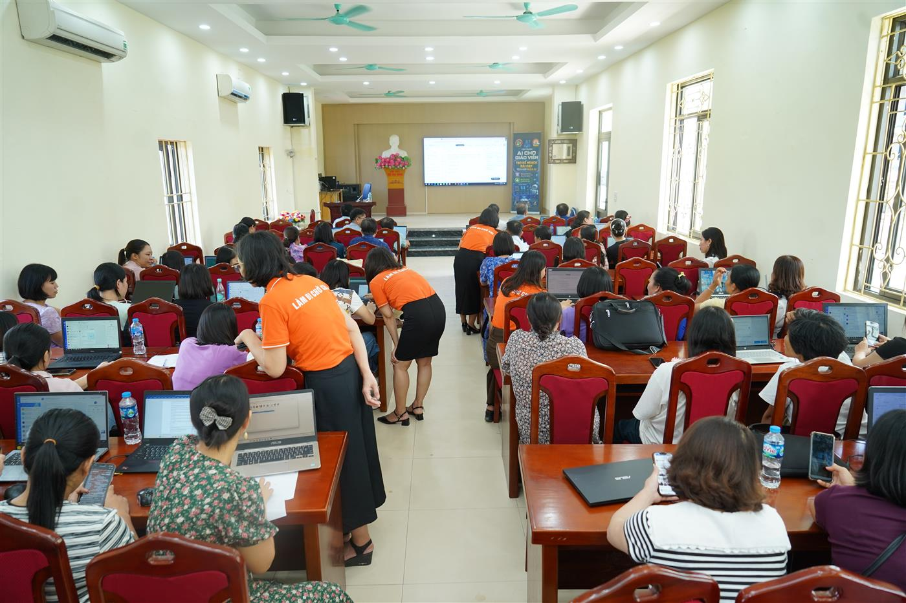

<title>Cô Oanh AI</title>
<meta name="description" content="Cô Oanh AI: đồng hành cùng giáo viên ứng dụng AI vào dạy học, bắt đầu từ số 0, cầm tay chỉ chuột đến khi ra kết quả.">
<meta property="og:type" content="website">
<meta property="og:url" content="https://gioi-thieu-co-oanh.vercel.app/">
<meta property="og:title" content="Cô Oanh AI - Đào tạo AI cho giáo viên">
<meta property="og:description" content="Giáo viên không cần giỏi công nghệ để bắt đầu với AI. Cô Oanh cùng đội nhóm Thủ Lĩnh Hành Động cầm tay chỉ chuột đến khi ra kết quả.">
<meta property="og:image" content="https://gioi-thieu-co-oanh.vercel.app/og-image.jpg">
<meta property="og:image:width" content="1200">
<meta property="og:image:height" content="630">
<meta property="og:locale" content="vi_VN">
<meta name="twitter:card" content="summary_large_image">
<meta name="twitter:title" content="Cô Oanh AI - Đào tạo AI cho giáo viên">
<meta name="twitter:image" content="https://gioi-thieu-co-oanh.vercel.app/og-image.jpg">
<link rel="stylesheet" href="https://fonts.googleapis.com/css2?family=Be+Vietnam+Pro:wght@400;500;600;700;800&display=swap">
<style>
/* Layout: trang sáng, nền trắng xen mảng xanh trời nhạt; cam là màu hành động (áo đội Thủ Lĩnh Hành Động). Ảnh thật làm nhân vật chính. */
:root{
  --bg:#ffffff; --sky:#eaf5ff; --sun:#fff4e6; --ink:#10294a; --muted:#4b6079; --line:#d8e6f3;
  --orange:#f26a1b; --orange-d:#d9570d; --blue:#1769d6; --white:#ffffff;
  --sans:'Be Vietnam Pro',system-ui,-apple-system,'Segoe UI',sans-serif;
  color-scheme:light;
}
*{box-sizing:border-box}
html{scroll-behavior:smooth}
body{background:var(--bg);color:var(--ink);font-family:var(--sans);font-size:17px;line-height:1.7;padding-inline:0}
h1,h2,h3,p{margin:0}
h1,h2,h3{text-wrap:balance;line-height:1.2}
img{display:block;max-width:100%}
.in{max-width:1080px;margin-inline:auto;padding-inline:16px}
section{padding-block:72px}
.tag{display:inline-block;font-size:13px;font-weight:700;letter-spacing:.12em;text-transform:uppercase;color:var(--orange-d);margin-bottom:12px}
h2{font-size:clamp(1.7rem,4vw,2.5rem);font-weight:800;margin-bottom:16px}
.lead{font-size:1.1rem;color:var(--muted);max-width:640px}
.btn{display:inline-block;padding:14px 26px;border-radius:999px;font-weight:700;text-decoration:none;font-size:1rem;line-height:1.2}
.btn.main{background:var(--orange);color:var(--white)}
.btn.main:hover{background:var(--orange-d)}
.btn.ghost{border:2px solid var(--ink);color:var(--ink)}
.btn:focus-visible,a:focus-visible{outline:3px solid var(--blue);outline-offset:3px}

/* thanh trên */
.top{position:sticky;top:0;z-index:5;background:rgba(255,255,255,.94);border-bottom:1px solid var(--line);padding-top:env(safe-area-inset-top,0px)}
.top .in{display:flex;align-items:center;justify-content:space-between;gap:12px;padding-block:10px}
.brand{font-weight:800;font-size:1.1rem}
.brand span{color:var(--orange)}
.top .btn{padding:9px 18px;font-size:.95rem}

/* hero */
.hero{overflow-x:clip;background:linear-gradient(180deg,var(--sky),var(--bg));padding-block:56px 72px}
.hero .in{display:grid;grid-template-columns:minmax(0,6fr) minmax(0,4fr);gap:48px;align-items:center}
h1{font-size:clamp(2.1rem,5.4vw,3.6rem);font-weight:800;letter-spacing:-.01em}
h1 em{font-style:normal;color:var(--orange)}
.hero .lead{margin:20px 0 28px}
.cta{display:flex;flex-wrap:wrap;gap:12px;align-items:center}
.phone{margin-top:18px;color:var(--muted);font-size:.95rem}
.phone b{color:var(--ink);font-size:1.15rem;user-select:all}
.frame{position:relative}
.frame::before{content:"";position:absolute;inset:6% -6% -6% 6%;background:var(--orange);border-radius:28px;opacity:.9}
.frame img{position:relative;border-radius:24px;width:100%;height:auto;aspect-ratio:1000/828;object-fit:cover;background:var(--line)}
.badge{position:relative;margin-top:22px;font-size:.95rem;line-height:1.45;color:var(--muted)}
.badge b{display:block;font-size:1.25rem;color:var(--ink)}

/* số liệu */
.nums{padding-block:0;margin-top:-28px;position:relative}
.nums .in{display:grid;grid-template-columns:repeat(4,minmax(0,1fr));gap:0;background:var(--ink);color:var(--white);border-radius:20px;padding:28px 12px}
.nums div{padding:4px 18px;border-left:1px solid rgba(255,255,255,.18)}
.nums div:first-child{border-left:0}
.nums b{display:block;font-size:clamp(1.7rem,3.6vw,2.4rem);font-weight:800;color:#ffb27a;line-height:1.1;font-variant-numeric:tabular-nums}
.nums span{font-size:.9rem;line-height:1.4;display:block;margin-top:6px;color:#d6e4f3}
.nums .in{margin-inline:16px;max-width:none}
@media (min-width:1112px){.nums .in{margin-inline:auto;max-width:1048px}}

/* nỗi lo */
.worry .grid{display:grid;grid-template-columns:repeat(3,minmax(0,1fr));gap:20px;margin-top:32px}
.card{background:var(--sun);border-radius:20px;padding:26px}
.card h3{font-size:1.15rem;margin-bottom:8px}
.card p{color:var(--muted);font-size:.98rem;line-height:1.6}
.worry .after{margin-top:32px;font-size:1.25rem;font-weight:700;max-width:760px}
.worry .after em{font-style:normal;color:var(--orange-d)}

/* cách học */
.how{background:var(--sky)}
.steps{display:grid;grid-template-columns:repeat(3,minmax(0,1fr));gap:20px;margin-top:32px}
.step{background:var(--white);border-radius:20px;padding:26px;border:1px solid var(--line)}
.step .n{display:inline-grid;place-items:center;width:38px;height:38px;border-radius:50%;background:var(--orange);color:var(--white);font-weight:800;margin-bottom:14px}
.step h3{font-size:1.15rem;margin-bottom:8px}
.step p{color:var(--muted);font-size:.98rem;line-height:1.6}
.zoomfig{margin-top:44px}
.zoomfig img{height:auto;border-radius:24px;box-shadow:0 14px 40px rgba(16,41,74,.18)}
.zoomfig figcaption{font-size:1rem;text-align:center}
figure{margin:0}
figure img{width:100%;border-radius:20px;object-fit:cover}
figcaption{font-size:.9rem;color:var(--muted);margin-top:10px;line-height:1.5}
.figs .a img{aspect-ratio:3/2}
.figs .b img{aspect-ratio:3/2}

/* hình ảnh thực tế */
.proof .head{max-width:680px}
.gal{display:grid;grid-template-columns:minmax(0,1fr) minmax(0,1fr);gap:20px;margin-top:32px}
.gal .wide{grid-column:1/-1}
.gal .wide img{aspect-ratio:16/8;object-position:50% 40%}
.gal img{aspect-ratio:3/2}

/* câu chuyện */
.story{background:var(--sun)}
.story .in{display:grid;grid-template-columns:minmax(0,1fr);max-width:820px}
.story blockquote{margin:24px 0 0;padding:0}
.story p.t{font-size:1.1rem;margin-bottom:1em}

/* về cô */
.about .cols{max-width:760px}
.about .pic img{border-radius:24px;aspect-ratio:4/5;object-fit:cover;object-position:50% 14%;width:100%}
.about p{margin-bottom:1em}
.quote{font-size:1.6rem;font-weight:800;line-height:1.3;color:var(--orange-d);border-left:5px solid var(--orange);padding-left:16px;margin:24px 0}
.chips{display:flex;flex-wrap:wrap;gap:8px;margin:20px 0 0;padding:0;list-style:none}
.chips li{background:var(--sky);border-radius:999px;padding:6px 14px;font-size:.9rem;font-weight:500}

/* đội */
.team{background:var(--ink);color:var(--white)}
.team .tag{color:#ffb27a}
.team .lead{color:#c9d9ea}
.team .grid{display:grid;grid-template-columns:repeat(3,minmax(0,1fr));gap:20px;margin-top:32px}
.team .card{background:rgba(255,255,255,.08);border:1px solid rgba(255,255,255,.16)}
.team .card h3{color:var(--white)}
.team .card p{color:#c9d9ea}
.team .grid.four{grid-template-columns:repeat(4,minmax(0,1fr))}
.team .close{margin-top:32px;font-size:1.2rem;font-weight:600;max-width:760px;color:var(--white)}
.team .big{font-size:2.6rem;font-weight:800;color:#ffb27a;line-height:1;margin-bottom:8px}

/* kêu gọi cuối */
.end{background:linear-gradient(180deg,var(--bg),var(--sun));text-align:center}
.end .in{max-width:760px}
.end .lead{margin-inline:auto;margin-bottom:28px}
.end .cta{justify-content:center}
.big-phone{display:block;margin:22px 0 4px;font-size:clamp(2rem,6vw,3rem);font-weight:800;color:var(--orange-d);user-select:all}
footer{padding-block:28px;text-align:center;font-size:.85rem;color:var(--muted);border-top:1px solid var(--line)}

@media (max-width:860px){
  section{padding-block:52px}
  .hero{padding-block:32px 56px}
  .hero .in{grid-template-columns:minmax(0,1fr);gap:36px}
  .frame{margin-right:12px}
  .nums .in{grid-template-columns:repeat(2,minmax(0,1fr));row-gap:20px}
  .nums div:nth-child(3){border-left:0}
  .worry .grid,.steps,.team .grid,.team .grid.four{grid-template-columns:minmax(0,1fr)}
  .gal{grid-template-columns:minmax(0,1fr)}
  .top .brand{font-size:1rem}
}
@media (prefers-reduced-motion:reduce){html{scroll-behavior:auto}}
</style>

<header class="top">
  <div class="in">
    <div class="brand">Cô Oanh <span>AI</span></div>
    <a class="btn main" href="https://zalo.me/0978268594" target="_blank" rel="noopener">Zalo cô Oanh</a>
  </div>
</header>

<main>
<div class="hero">
  <div class="in">
    <div>
      <div class="tag">Đào tạo AI cho giáo viên</div>
      <h1>Giáo viên không cần giỏi công nghệ để <em>bắt đầu với AI</em></h1>
      <p class="lead">Cô Oanh cùng đội nhóm Thủ Lĩnh Hành Động đồng hành với thầy cô từ số 0. Học trực tiếp hoặc trên Zoom, được cầm tay chỉ chuột đến khi ra kết quả, và học lại miễn phí trong 3 tháng.</p>
      <div class="cta">
        <a class="btn main" href="https://zalo.me/0978268594" target="_blank" rel="noopener">Kết nối Zalo với cô Oanh</a>
        <a class="btn ghost" href="#hinh-anh">Xem lớp học thật</a>
      </div>
      <p class="phone">Gọi trực tiếp: <b>0978268594</b></p>
    </div>
    <div>
      <div class="frame">
        
      </div>
      <div class="badge"><b>Nguyễn Thị Kim Oanh</b>Phụ trách điều hành đội nhóm đào tạo AI cho giáo viên, Thủ Lĩnh Hành Động</div>
    </div>
  </div>
</div>

<div class="nums">
  <div class="in">
    <div><b>1000+</b><span>học viên đã học cầm tay chỉ chuột</span></div>
    <div><b>~100</b><span>thầy cô truyền nghề trong đội</span></div>
    <div><b>~2000</b><span>học viên mới mỗi tháng ở lớp phổ cập AI miễn phí</span></div>
    <div><b>3 năm</b><span>đào tạo AI cho giáo viên</span></div>
  </div>
</div>

<section class="worry">
  <div class="in">
    <div class="tag">Thầy cô có đang như vậy?</div>
    <h2>Muốn dùng công nghệ, nhưng chưa biết bắt đầu từ đâu</h2>
    <p class="lead">Giáo viên từ 25 đến 60 tuổi đều có chung những nỗi lo này.</p>
    <div class="grid">
      <div class="card"><h3>Sợ bị tụt hậu</h3><p>Lo mình chậm hơn so với yêu cầu của thời đại công nghệ trong giáo dục.</p></div>
      <div class="card"><h3>Không biết bắt đầu từ đâu</h3><p>Muốn ứng dụng công nghệ vào việc dạy, nhưng chưa biết nên mở đầu từ việc gì.</p></div>
      <div class="card"><h3>Áp lực chuyển đổi số</h3><p>Lo không đáp ứng được yêu cầu của Bộ Giáo dục về chuyển đổi số trong giáo dục.</p></div>
    </div>
    <p class="after">Ở lớp của cô Oanh, thầy cô <em>không phải tự mày mò một mình</em>. Luôn có người ngồi cạnh, chia sẻ màn hình và làm cùng.</p>
  </div>
</section>

<section class="how">
  <div class="in">
    <div class="tag">Cách học</div>
    <h2>Học xong là có kết quả trong tay</h2>
    <p class="lead">Không dừng ở nghe giảng. Mỗi buổi học đều có người hỗ trợ trực tiếp từng thầy cô.</p>
    <div class="steps">
      <div class="step"><div class="n">1</div><h3>Bắt đầu miễn phí</h3><p>Lớp phổ cập AI cho cộng đồng giáo viên trên Zoom, học miễn phí vào tối thứ 5, 6, 7 và chủ nhật. Mỗi tối có vài trăm đến 1000 thầy cô cùng học.</p></div>
      <div class="step"><div class="n">2</div><h3>Cầm tay chỉ chuột</h3><p>Sau phần giảng chính, lớp được chia thành các phòng nhỏ. Mỗi thầy cô có người hỗ trợ chia sẻ màn hình, làm cùng đến khi ra kết quả sau mỗi buổi.</p></div>
      <div class="step"><div class="n">3</div><h3>Học lại, không lo quên</h3><p>Học đi học lại miễn phí trong 3 tháng, có video xem lại trên edu.thulinhhanhdong.com và câu lạc bộ Zoom tối thứ 3 hàng tuần để giữ năng lượng.</p></div>
    </div>
    <figure class="zoomfig"><figcaption>Cô Oanh cùng đội nhóm đào tạo trên Zoom, màn hình hiển thị 1K người tham gia trong một buổi.</figcaption></figure>
  </div>
</section>

<section class="proof" id="hinh-anh">
  <div class="in">
    <div class="head">
      <div class="tag">Hình ảnh thực tế</div>
      <h2>Đào tạo trực tiếp ở Hà Nội và online trên Zoom</h2>
      <p class="lead">Buổi tập huấn "AI cho giáo viên: Tạo kế hoạch bài dạy tích hợp NLS &amp; AI" ngày 28/08/2026, bám sát chương trình GDPT 2018, công văn 5512, thông tư 02, QĐ 2422.</p>
    </div>
    <div class="gal">
      <figure class="wide"><figcaption>Cô Oanh cùng đội nhóm tổ chức buổi tập huấn ngày 28/08/2026 tại Hà Nội. Thông điệp của buổi học: đơn giản, dễ hiểu, áp dụng được ngay.</figcaption></figure>
      <figure class="wide"><figcaption>Cô Oanh cùng đội nhóm áo cam đi dọc lối giữa hội trường, hỗ trợ từng giáo viên trên laptop của mình.</figcaption></figure>
    </div>
  </div>
</section>

<section class="story">
  <div class="in">
    <div class="tag">Câu chuyện học viên</div>
    <h2>Từ cô giáo vật lý chưa biết gì về AI đến giảng viên chính</h2>
    <p class="t">Cô Nguyễn Thị Hiền là giáo viên vật lý THPT, trước đó chưa biết gì về AI. Sau khóa cầm tay chỉ chuột, cô tự tin ứng dụng AI vào giảng dạy.</p>
    <p class="t">Cô không dừng lại ở đó. Cô học tiếp lớp truyền nghề, tham gia phụng sự, rồi trở thành giảng viên chính của Thủ Lĩnh Hành Động. Bây giờ nhiều trường mời cô về chia sẻ AI cho giáo viên.</p>
    <p class="t"><b>Đó là điều cô Oanh muốn mỗi thầy cô đi qua lớp học đều có thể làm được.</b></p>
  </div>
</section>

<section class="about">
  <div class="in cols">
    <div>
      <div class="tag">Về cô Oanh</div>
      <h2>Người từng bắt đầu từ số 0</h2>
      <p>Cô Oanh có hơn 10 năm làm nhân viên văn phòng. Năm 2021, dịch Covid đến, cô chuyển sang làm online trong lĩnh vực giáo dục. Lúc đó cô chưa dùng Facebook, chưa biết công nghệ, và mất 2 năm để học mọi kỹ năng của người làm nghề online.</p>
      <p>Năm 2024, cô bắt đầu tìm hiểu AI và chia sẻ với cộng đồng giáo viên cách ứng dụng AI trong giảng dạy. Cô từng bắt đầu từ số 0, giống nhiều thầy cô hôm nay.</p>
      <p class="quote">Phụng sự để dẫn đầu</p>
      <p>Từ 2021, cô tham gia phụng sự nhiều chương trình do Tâm Trí Lực tổ chức, các cuộc thi sơ đồ tư duy quốc gia và quốc tế, và các trường đào tạo sơ đồ tư duy cho giáo viên, học sinh.</p>
    </div>
  </div>
</section>

<section class="team">
  <div class="in">
    <div class="tag">Đội ngũ giảng viên</div>
    <h2>Không chỉ có một giảng viên, thầy cô sẽ học cùng cả một cộng đồng</h2>
    <p class="lead">Thủ Lĩnh Hành Động tổ chức cộng đồng gồm nhiều giảng viên. Các thầy cô ấy đều đang trực tiếp giảng dạy tại các trường, và đều từng ngồi ở vị trí của thầy cô bây giờ.</p>
    <div class="grid four">
      <div class="card"><div class="big">1</div><h3>Học ở lớp cộng đồng</h3><p>Các thầy cô bắt đầu bằng những buổi Zoom cộng đồng miễn phí.</p></div>
      <div class="card"><div class="big">2</div><h3>Vào lớp cầm tay chỉ chuột</h3><p>Được hỗ trợ từng bước đến khi tự làm ra kết quả.</p></div>
      <div class="card"><div class="big">3</div><h3>Gắn bó với văn hóa phụng sự</h3><p>Thích môi trường và văn hóa phụng sự của Thủ Lĩnh Hành Động, nên đăng ký khóa truyền nghề.</p></div>
      <div class="card"><div class="big">4</div><h3>Được trao quyền dạy</h3><p>Trực tiếp đào tạo học viên mới, từ lớp cộng đồng đến lớp cầm tay chỉ chuột.</p></div>
    </div>
    <p class="close">Vì vậy, người hướng dẫn thầy cô ở đây là những đồng nghiệp hiểu rõ việc dạy học, và chính họ đã đi qua con đường này.</p>
  </div>
</section>

<section class="end" id="lien-he">
  <div class="in">
    <div class="tag">Bắt đầu hôm nay</div>
    <h2>Thầy cô muốn bắt đầu với AI?</h2>
    <p class="lead">Nhắn Zalo cho cô Oanh để được tư vấn lớp học phù hợp. Thầy cô cũng có thể theo dõi kênh Cô Oanh AI trên Facebook để xem các hướng dẫn dùng AI cho giáo viên.</p>
    <span class="big-phone">0978268594</span>
    <div class="cta">
      <a class="btn main" href="https://zalo.me/0978268594" target="_blank" rel="noopener">Kết nối Zalo với cô Oanh</a>
      <a class="btn ghost" href="https://www.facebook.com/cooanhai" target="_blank" rel="noopener">Fanpage Cô Oanh AI</a>
    </div>
  </div>
</section>
</main>

<footer>© Cô Oanh AI · Nguyễn Thị Kim Oanh · Thủ Lĩnh Hành Động</footer>
